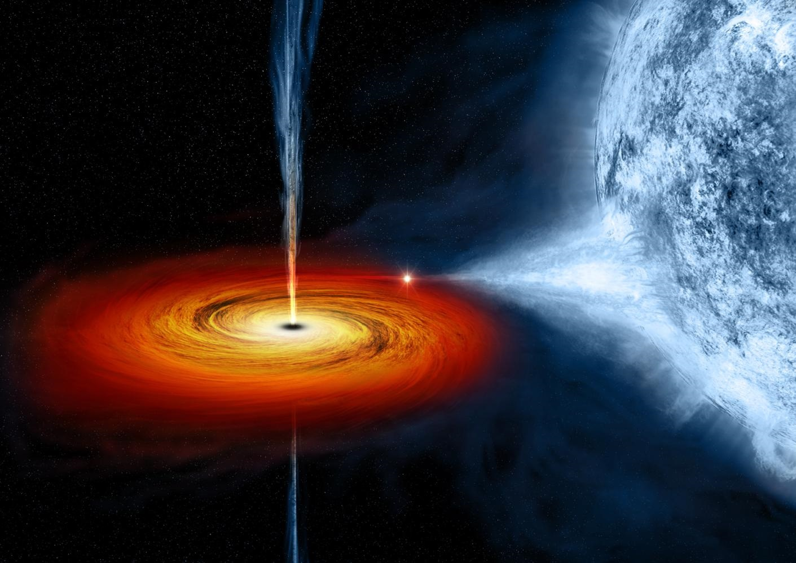
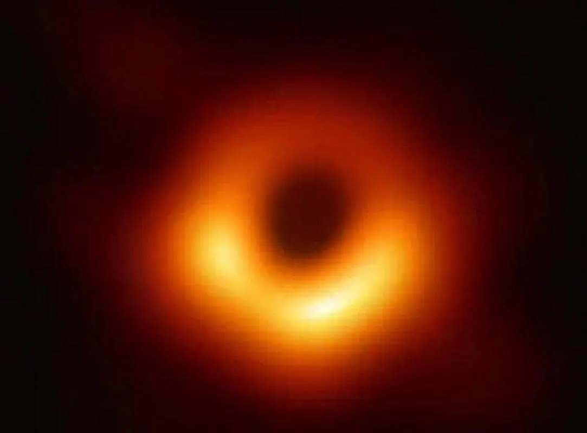

|
|---|
| 黑洞（英文：Black Hole）是现代广义相对论中，存在于宇宙空间中的一种天体。黑洞的引力极其强大，使得视界内的逃逸速度大于光速。故而，“黑洞是时空曲率大到光都无法从其事件视界逃脱的天体”。 1916年，德国天文学家卡尔·史瓦西通过计算得到了爱因斯坦场方程的一个真空解，这个解表明，如果一个静态球对称星体实际半径小于一个定值，其周围会产生奇异的现象，即存在一个界面——“视界”，一旦进入这个界面，即使光也无法逃脱。这个定值称作史瓦西半径，这种“不可思议的天体”被美国物理学家约翰·阿奇博尔德·惠勒命名为“黑洞”。 黑洞无法直接观测，但可以借由间接方式得知其存在与质量，并且观测到它对其他事物的影响。借由物体被吸入之前的因黑洞引力带来的加速度导致的摩擦而放出x射线和γ射线的“边缘讯息”，可以获取黑洞存在的讯息。推测出黑洞的存在也可借由间接观测恒星或星际云气团绕行轨迹来得出，还可以取得其位置以及质量。 北京时间2019年4月10日21时，人类首张黑洞照片面世，该黑洞位于室女座一个巨椭圆星系M87的中心，距离地球5500万光年，质量约为太阳的65亿倍 。北京时间2021年3月24日晚10点，偏振光下M87超大质量黑洞图像公开 。 黑洞由中心的一个由黎曼曲率张量出发构建的标量多项式在趋向此处发散的奇点和周围的时空组成，其边界为只进不出的单向膜：事件视界，事件视界的范围之内不可见。依据爱因斯坦的广义相对论，当一颗垂死恒星崩溃，它将向中心塌缩，这里将成为黑洞，吞噬邻近宇宙区域的所有光线和任何物质。 黑洞的产生过程类似于中子星的产生过程：某一个恒星在准备毁灭，核心在自身重力的作用下迅速地收缩，塌陷，发生强力爆炸。当核心中所有的物质都变成中子时收缩过程立即停止，被压缩成一个密实的星体，同时也压缩了内部的空间和时间。但在黑洞情况下，由于恒星核心的质量大到使收缩过程无休止地进行下去，连中子间的排斥力也无法阻挡。中子本身在挤压引力自身的吸引下被碾为粉末，剩下来的是一个密度高到难以想象的物质。由于高质量而产生的引力，使得任何靠近它的物体都会被它吸进去。 也可以简单理解为：通常恒星最初只含氢元素，恒星内部的氢原子核时刻相互碰撞，发生聚变。由于恒星质量很大，聚变产生的能量与恒星万有引力抗衡，以维持恒星结构的稳定。由于氢原子核的聚变产生新的元素——氦元素，接着，氦原子也参与聚变，改变结构，生成锂元素。如此类推，按照元素周期表的顺序，会依次有铍元素、硼元素、碳元素、氮元素等生成，直至铁元素生成，该恒星便会坍塌。这是由于铁元素相当稳定，参与聚变时释放的能量小于所需能量，因而聚变停止，而铁元素存在于恒星内部，导致恒星内部不具有足够的能量与质量巨大的恒星的万有引力抗衡，从而引发恒星坍塌，最终形成黑洞。说它“黑”，是因为它产生的引力使得它周围的光都无法逃逸。跟中子星一样，黑洞也是由质量大于太阳质量好几十甚至几百倍以上的恒星演化而来的。 当一颗恒星衰老时，它的热核反应已经耗尽了中心的燃料，由中心产生的能量已经不多了。这样，它再也没有足够的力量来承担起外壳巨大的重量。所以在外壳的重压之下，核心开始坍缩，物质将不可阻挡地向着中心点进军，直到最后形成体积接近无限小、密度几乎无限大的星体（几乎为奇点）而当它的半径一旦收缩到一定程度（一定小于史瓦西半径），质量导致的时空扭曲就使得即使光也无法向外射出——“黑洞”就诞生了。 |
 |
|---|---|
| 影视作品中常见的黑洞 | |
|  | |
| 真实的黑洞 |